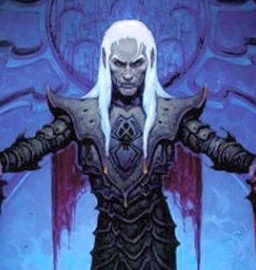

Forums galactiques > Taverne galactique : lieu de discussion informel > Un nouveau commandant....
Pages : 1
| Asauwin Réputation à la taverne : 6  08/01 ETU 17:04 | Score : 8 Détails [HRP] Je ne sais pas si je suis au bon endroit pour me présenter Ô_Õ [/HRP]
Les portes s'ouvrirent, laissant entendre au dehors que le bar était plein, et l'humeur bonne semble-t-il. La personne pénêtra dans la salle, vêtue d'un long manteau, un capuchon couvrant la partie haute de son visage. De grande taille, il marchait avec assurance, mais sans arrogance. (la nuance est faible ^^). S'approchant du comptoir, il releva son capuchon. On pu alors voir son visage: des traits fins, des yeux brillants, laissant supposer une vivacité d'esprit... Sa mine était sombre, presque triste. Il avait les cheveux blancs, malgré la relative jeunesse de ses traits. Il héla la salle : "Je paye un verre à chacun de celui qui acceptera d'écouter mon histoire." (Notez l'habile tactique, un verre ne se refusant pas, son auditoire serait nombreux ^^) Les buveurs et autres curieux se rassemblèrent donc près de l'inconnu. Il commença son récit: "Un nouvel empire est né: Sous mon égide, moi Asauwin, Consul suprême d'Azgharde, mon monde natal. Il n'y règnait que le chaos et la misère, avant que je prenne la tête de mon monde, par ce qu'on appellait me semble-t-il un coup-d'état à l'époque pré-historique. J'y suis parvenu certains disent par perfidie (je prèfère dire par diplomatie), en nouant des contacts, et m'assurrant le crédit de généraux dévoués à ma cause. Je suis le seul décisionnaire de ce qui est bon ou non pour mon peuple. Je suis pacifiste, dans la mesure où on ne gêne pas ma progression (mes opposants le savent par expérience). Ces évènements sont récents, et je suis ici pour répandre la nouvelle moi-même. Je ne vais pas monopoliser la parole plus longtemps, vos verres vous seront servis à table." Il pris un verre, et bavarda avec d'autres commandants, satisfait de son intervention. |
Pages : 1
Forums galactiques > Taverne galactique : lieu de discussion informel > Un nouveau commandant....